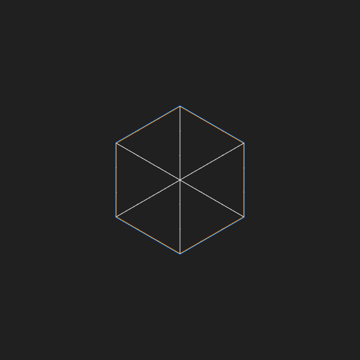

I design electronics and create system-level software in The Netherlands.
I help companies by creating reliable, low-level, production-ready systems:
- Control system firmware
- Printed circuit boards
- Carrier boards (e.g. for the Raspberry Pi Compute Module)
Selected public work includes:
- Systems with the 6502, Z80, 6809, 68000, Raspberry Pi, and ESP32
- Project-specific optimising assemblers and DSLs
- Time-sharing kernels/real-time operating systems
- QCPU 2 microprocessor architecture
- Open Source repositories and contributions (e.g. Zig, Nginx, Vim)
Interested in hiring me for a project? E-mail me and we can babble about your idea.
More details needed? Ask for my CV.